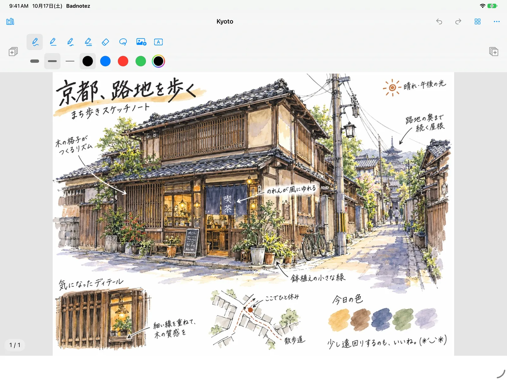
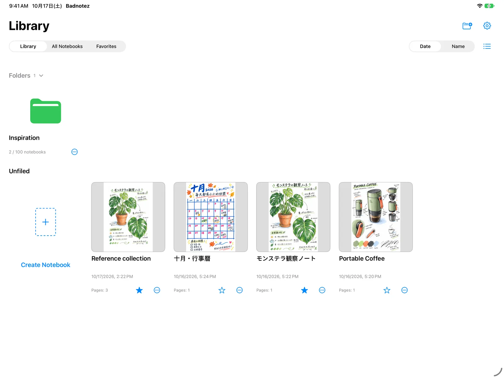
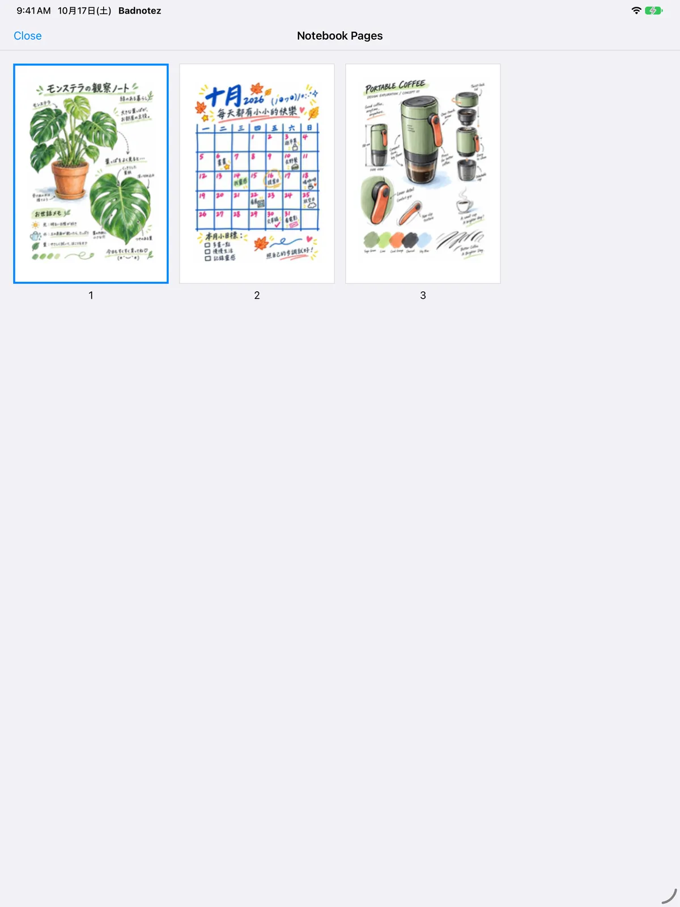
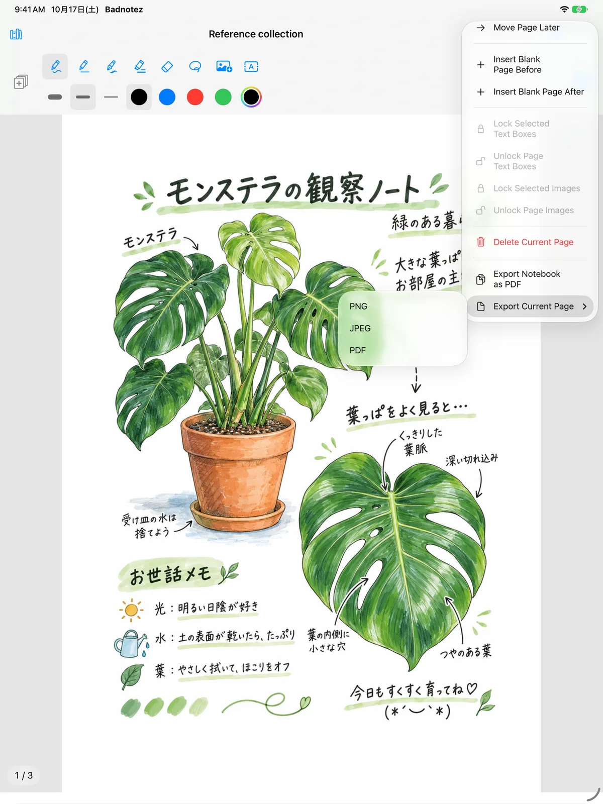
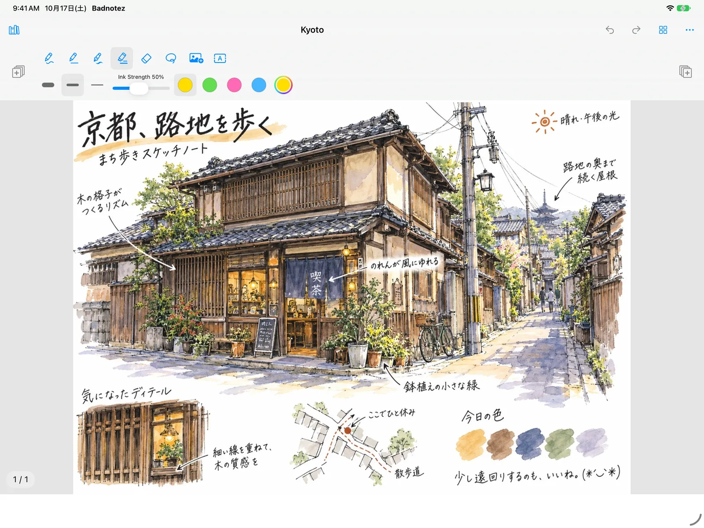
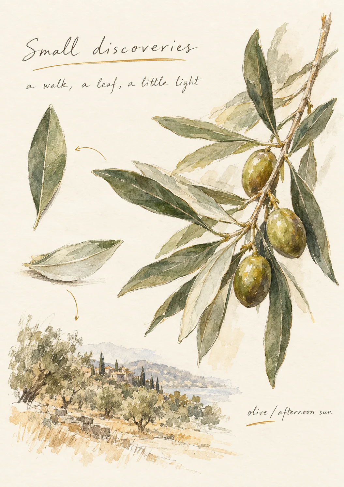

Pens that feel right.
Pen, monoline, fountain pen and highlighter on Apple's native ink, with three sizes each and palettes of your own.
HANDWRITING NOTEBOOK FOR IPAD
Write, sketch and keep what matters, with Apple Pencil on paper-like pages.
One-time purchase · No subscription · iPadOS 27 or later

LESS NOISE. MORE NOTEBOOK.
Familiar tools, an open page, and a little space to think.
Pen, monoline, fountain pen and highlighter on Apple's native ink, with three sizes each and palettes of your own.
Set highlighter opacity from 10% to 100%, then lasso your writing to move it or make it smaller.
Place a photo beside a sketch, add a text box when typing is quicker, and lock them where you put them.
Portrait A4 pages, up to 150 in a notebook. Swipe to turn, pull past the last page to add one, jump with thumbnails.
Folders, favorites, covers, and list or grid views. Recently Deleted keeps your last 30 notebooks, just in case.
Export PDF, PNG or JPEG, save to Photos, or keep an editable .badnotes backup to move to another iPad.
ON YOUR IPAD
Actual app screens with imported sample illustrations.





Illustrated pages, a little inspiration for yours.
A PAGE FOR EVERY KIND OF THOUGHT
A passing idea. A line worth keeping. Something you saw on the way home.
PERSONAL, BY NATURE
No account to create. No feed to follow. Your notebooks stay on your device, and you choose what to share.
Our privacy promiseGOOD TO KNOW
Any iPad that runs iPadOS 27 or later. Badnotez is made for Apple Pencil.
Writing and drawing are for Apple Pencil. Your fingers tap buttons, scroll, zoom and turn pages.
No. Notebooks stay on your iPad and are included in your iPad's backup. To move a notebook to another iPad, export an editable .badnotes backup and import it there.
No. Badnotez is a one-time purchase, with no in-app purchases, ads or account.
A whole notebook as PDF, or the current page as PDF, PNG or JPEG. Images can be saved straight to Photos.
Tap the gear in the Library and open Recently Deleted. It keeps your 30 most recently deleted notebooks.
English, Traditional Chinese, Simplified Chinese, Japanese, Korean and Spanish. Badnotez follows your iPad's language settings.
ONE PAGE AT A TIME
Badnotez is preparing for its first App Store release. Made for iPadOS 27 and Apple Pencil.
GitHub Issues are public. Please keep personal notes private.